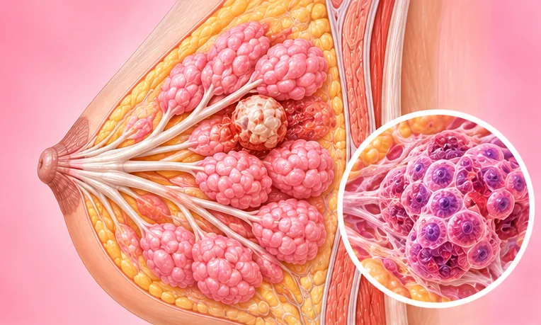

炎性乳腺癌
一种罕见、生长较快的乳腺癌，会使乳房发红、肿胀、发热
这是什么
癌细胞堵塞乳房皮肤里的细小通道，使乳房可能在几周内变红、肿胀、发热，常常摸不到明显的肿块，看起来也可能像感染。
- 乳房和腋下
- 多见于女性，男性少见
- 乳房红肿发热
- 就诊科室
- 先看家庭医生，再看乳腺专科或肿瘤科医生
- 多发人群
- 多见于女性；比较少见，男性也可能患上
- 传染性
- 不传染
- 病程
- 可能在几周内发生变化，所以尽早检查很重要；医疗团队会说明方案
常见表现
乳房出现变化乳房改变 
腋下有肿块腋窝肿物
其他症状
- 乳房变红、肿胀、变沉，常常在几周内发生
- 皮肤出现小凹点，像橘子皮
- 乳房摸起来发热、触痛、疼痛或发痒
为什么会这样

病因尚未完全明确特发性 
体重超标超重
其他原因
- 大多数是女性，男性也可能患上，但很少见
- 它不是感染，也不是你做了什么而造成的
出现这些情况请先看医生
- 呼吸困难或胸痛：拨打999
- 乳房很快变红、肿胀或发热，不管有没有肿块：尽快看医生
- 乳房皮肤像橘子皮，或乳头内陷
- 红肿在医生的第一次处理之后没有好转：请再回去看医生
- 腋下或锁骨上方出现新的肿块
- 新出现的骨痛、一直不好的咳嗽，或没有刻意减肥却体重下降
如果有以上情况，请先看医生，再来做调理。
本页只是一般性的健康资讯。请继续按时服用平常的药物，并继续看医生。
请继续日常治疗
请继续按医嘱服药，并按时复诊。我们的调理是温和的辅助，不能代替医疗。
日常护理
- 遵照癌症医疗团队的安排，按时复诊
- 向医疗团队询问疼痛、皮肤护理、饮食和心理支持方面的帮助
- 如果乳房疼痛，请穿柔软宽松的衣服
- 使用任何药膏、补充剂或草药产品之前，先问医疗团队
- 不要自行中断治疗，先和医疗团队商量
告诉理疗师
- 癌症或正在治疗癌症
- 皮肤破损、发红或疼痛
- 发烧或正在感染
- 服用抗凝药
- 骨质疏松
调理师会在开始前和你确认这一项。
常见问题
炎性乳腺癌是什么？
一种罕见、生长较快的乳腺癌，会使乳房发红、肿胀、发热。癌细胞堵塞乳房皮肤里的细小通道，使乳房可能在几周内变红、肿胀、发热，常常摸不到明显的肿块，看起来也可能像感染。
炎性乳腺癌有哪些常见表现？
乳房出现变化；腋下有肿块
为什么会有炎性乳腺癌？
病因尚未完全明确；体重超标
有炎性乳腺癌要怎么照顾自己？
遵照癌症医疗团队的安排，按时复诊；向医疗团队询问疼痛、皮肤护理、饮食和心理支持方面的帮助；如果乳房疼痛，请穿柔软宽松的衣服；使用任何药膏、补充剂或草药产品之前，先问医疗团队；不要自行中断治疗，先和医疗团队商量
AI Body Master 的调理对炎性乳腺癌有帮助吗？
调理是温和的无针经络养生辅助，不能治疗或治愈炎性乳腺癌，也不能代替药物或医生。开始前请告诉理疗师。
相关疾病
参考资料: General information based on public health sources such as Mayo Clinic, NHS, Cleveland Clinic and NCBI StatPearls.
页面更新: 2026-11-01